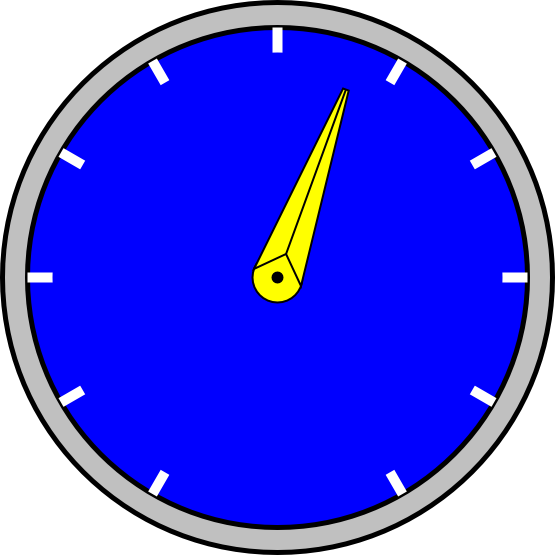
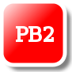

HMIServer
Help
HMIServer
Help
Help - HMI SVG Graphics Elements
Overview
SVG stands for Scalable Vector Graphics. SVG is one of the web standards specified by the W3C, which is the group responsible for defining and documenting the standards used by modern web browsers. SVG allows high quality interactive graphics to be embedded directly into a web page.
Unlike simple PNG or JPEG graphics, SVG is an XML based description of a graphic element which can be directly manipulated by client scripting. That is, the SVG graphic or image can be changed dynamically without having to reload the web page or download a new image. This allows graphical web based HMI applications to be created which have the sort of interactive graphics normally associated with conventional HMI programs.
SVG and Industrial HMI
SVG can be used for industrial HMI systems in two ways. One is to provide static vector graphics for background images, plans, maps, etc. Because the drawing is a "vector" representation rather than a simple "raster" (also known as a "bit map") image, the SVG graphic can be zoomed and resized without losing any resolution. This makes it suitable for displaying high quality drawings and plans on a web page.
The other use, and the one we will concentrate on here, is using SVG to create HMI symbols which we can manipulate dynamically. These symbols can included such things as pilot lights, gauges, tanks, pumps, etc. The dynamic manipulations can include such things as changing colours, rotation angles, or simple animations.
Example 1, A Simple Pilot Light
The following shows an example of a symbol built using a single basic SVG command.
 A simple round pilot light can be created as a circle. The SVG XML to create
this is shown below.
A simple round pilot light can be created as a circle. The SVG XML to create
this is shown below.
<circle id="PL1" cx="25px" cy="25px" r="25px" fill="red" stroke="black" stroke-width="5px"/>
This creates a circle which we can reference by the name "PL1" (id="PL1"). We can change any characteristic of this circle via Javascript, but for pilot lights we would typically want to change colour. The following example shows how easy this can be.
svgdoc.getElementById("PL1").setAttribute('fill', "green");
Example 2, Bulding a Complex Graphic
The following shows how several SVG commands can be combined to create a more complex symbol.

Example 1, a dial gauge. The SVG code to create this is shown below.
<!-- This adds the outer ring. --> <circle cx="0px" cy="0px" r="275px" fill="silver" stroke="black" stroke-width="5px"/> <!-- This adds the outer part of the dial background. --> <circle cx="0px" cy="0px" r="250px" fill="blue" stroke="black" stroke-width="5px"/> <!-- These add the "tick" marks to the dial. --> <g stroke="white" stroke-width="10px"> <line x1="0" y1="-250" x2="0" y2="0"/> <g transform="rotate(30)"> <line x1="0" y1="-250" x2="0" y2="250"/> </g> <g transform="rotate(60)"> <line x1="0" y1="-250" x2="0" y2="250"/> </g> <g transform="rotate(90)"> <line x1="0" y1="-250" x2="0" y2="250"/> </g> <g transform="rotate(120)"> <line x1="0" y1="-250" x2="0" y2="250"/> </g> <g transform="rotate(150)"> <line x1="0" y1="-250" x2="0" y2="250"/> </g> </g> <!-- This covers the inner part of the "tick" marks and provides most of the dial background. --> <circle cx="0px" cy="0px" r="225px" fill="blue" stroke="none" stroke-width="0px"/> <!-- This is the centre part of the pointer. --> <circle cx="0px" cy="0px" r="25px" fill="yellow" stroke="black" stroke-width="2px"/> <circle cx="0px" cy="0px" r="5px" fill="black" stroke="black" stroke-width="2px"/> <!-- This is the actual pointer which we rotate. --> <g id="Dial1" transform="rotate(0)"> <polygon fill="yellow" stroke="black" stroke-width="2px" points="-25,0 -3,200 3,200 25,0 0,25" /> <line x1="0" y1="25" x2="0" y2="200" stroke="black" stroke-width="2px"/> </g>
Most of the dial is static SVG which provides "decoration". The part we want to manipulate is the pointer, which we want to rotate. The following Javascript code shows how this can be done.
svgdoc.getElementById("Dial1").setAttribute("transform", "rotate(" + newangle +")");
Visual Effects
SVG allows for visual effects such as colour gradients and drop shadows as shown in the push button below.
 The SVG code to create this is shown below.
The SVG code to create this is shown below.
< !-- This shows a push button. -- >
< g transform="translate(0,0)"
onmousedown="MBHMIProtocol.WriteToggleImmediate('PB2', 'PL2');" >
< !-- The following filter is used to add a drop shadown. -- >
< filter id="PB2dropshadow" >
< feGaussianBlur stdDeviation="2" >
< /feGaussianBlur >
< /filter >
< !-- This applies a linear colour gradient across the button. -- >
< linearGradient id="PB2Gradient" x1="0" y1="1" x2="0" y2="0" >
< stop offset="50%" stop-color="red" / >
< stop offset="100%" stop-color="white" / >
< /linearGradient >
< !-- This rectangle is used for the drop shadown and needs to match
the size used for the button. -- >
< rect x="7" y="7" width="75" height="75" rx="15"
fill="grey" stroke="none" stroke-width="0px"
filter="url(#PB2dropshadow)"/ >
< !-- This is the actual button. The button "class" connects it with the
css style which animates it. -- >
< g class="svgbuttondef" >
< rect x="0" y="0" width="75" height="75" rx="15"
fill="url(#PB2Gradient)" stroke-width="5px"/ >
< !-- This is the text label. -- >
< text x="15" y="45" font-size="24" > PB2< /text >
< /g >
< /g >
CSS Animation
SVG can be styled using CSS just like ordinary HTML. This means that simple animation effects can be achieved without requiring any scripting. If we apply the following style to the push button in the example above, then when we click on the button the outline of the square and the lettering inside the button (which are both affected by the "stroke" property) turn white. When we release the button, the "strokes" turn back to black. This is a simple way of providing immediate feed back to the operator when they click on a button.
/* The following style is used to animate SVG push buttons. It causes the
outline (stroke) of the button to reverse when activated. */
.svgbuttondef {
stroke: black;
}
.svgbuttondef:active {
stroke: white;
}
Button when normal:
Button when clicked:

CSS animation in SVG appears to work reliably with most web browsers. If there is some reason for not using CSS animation, then some simple Javascript animation can produce an equivalent result.
More Examples
The following are more examples of the types of graphics that can be created.


Basic SVG Elements
The complete SVG standard can be found at the link mentioned above. The following however provides a simple overview of some of the basic shapes.
Line
A line is the most basic shape. The following shows a simple line. The line extends from coordinates (x1,y1) to (x2,y2).
<line x1="0" y1="50" x2="150" y2="50"/>
Polyline
A polyline is like a line, except it is specified as a series of (x,y) points. There is no limit to the number of points which can be specified.
<polyline points="0,0 0,50 140,50" />
Polygon
A polygon is like a polyline, but forms a closed shape. The following is used to form a hexagon.
<polygon points="0,0 -12,25 0,50 25,50 37,25 25,0" />
Rectangle
A rectange is specified with the upper left corner at position (x,y), a width, and a height. The radius of the corners can also be specified.
<rect x="7" y="7" width="150" height="50" rx="15"/>
Circle
A circle is specified with the x and y coordinates of its centre, and a radius.
<circle cx="25px" cy="25px" r="25px"/>
Text
Text can be displayed by specifying the (x,y) coordinates, and the text which is desired.
<text x="50" y="30" >Some sample text</text>
Stroke and Fill
Stroke refers to the outline of an element, or in the case of text, to the width of the lines making up the characters. The colour of the stroke can be set using the "stroke" property. The width of the stroke can be set using "stroke-width". Stroke width is normally specified in "pixels" (px).
Fill refers to the colour which fills an enclosed shape. This can be set by using "fill".
Font size in text can be modified by using "font-size".
<circle cx="25px" cy="25px" r="25px" fill="red" stroke="black" stroke-width="5px"/> <text x="50" y="30" font-size="24">Some sample text</text>
As well as specifying them directly, properties can also be set by refering to a definition located elsewhere. For example, the following shows the fill being defined by refering to a linear gradient definition (not shown here). The reference is in the form "url(#SomeDefinition)".
<rect x="7" y="7" width="150" height="50" rx="15" fill="url(#PB2Gradient)"/>
Comments
SVG comments follow the same format as HTML comments.
<!-- This is a comment. -->
SVG Document Definitions
Like HTML, SVG requires that the web browser be informed what sort of mark up the content is. That is, the web browser has to be told to expect SVG. This allows blocks of SVG to be mixed in with HTML in the same web page.
The following defines a block of SVG, with a canvas area 250 pixels wide and 60 pixels high. It then draws a rectangle in that area and closes off the block with an SVG close tag.
<svg xmlns="http://www.w3.org/2000/svg" xmlns:html="http://www.w3.org/1999/xhtml" width="250px" height="60"> <!-- Display a rectangle. --> <rect x="7" y="7" width="150" height="35" rx="15" fill="red" stroke="black" stroke-width="5px" /> </svg>
SVG Libraries
SVG elements can be collected into groups and re-used rather than having to repeat the same text over and over again. The following shows a simple example.
First we will define a few colours. The details of how these work will be explained elsewhere, but it is sufficient to say that these provide a "drop shadow" (a blurred background shadow effect) and a silver colour "gradient" (a colour which gradually shades into another - sliver into white in this case). These colours can be addressed by using their "id". These are "MB_DropShadowFilter" in the case of the drop shadow, and "MB_SilverGradient" in the case of the silver colour gradient. Note that these elaborate colour effects are not strictly necessary, but this does show how such decorative effects can be re-used.
<!-- These are some colour definitions which are used below. --> <defs> <!-- The following filter is used to add a drop shadown. --> <filter id="MB_DropShadowFilter"> <feGaussianBlur stdDeviation="2"> </feGaussianBlur> </filter> <!-- This provides a silver shading colour. --> <linearGradient id="MB_SilverGradient" x1="1" y1="1" x2="0" y2="0"> <stop offset="50%" stop-color="silver" /> <stop offset="100%" stop-color="white" /> </linearGradient> </defs>
Next, we define some geometric shapes. The first is a a decorative nut which we call "MB_NUT". Again, this decorative nut can be addressed by using its "id" (id="MB_NUT"). This nut is made from two octagonal polygons. The first polygon provides a background shadow which is slightly offset from the actual nut itself, which is formed from the second polygon.
Here we use the two colours which we defined above. The shadow is given a blurred background effect using the colour filter="url(#MB_DropShadowFilter)". The nut itself is given a shaded silver effect using the colour fill="url(#MB_SilverGradient)".
Below that we define the actual pilot light which we identify as "MB_PilotLightRound". The actual pilot light is just a simple circle which sits on top of the nut we defined above. The same nut can also be used in additional widgets.
<!-- Define the actual Pilot lights. --> <defs> <!-- This is a decorative octagonal nut. --> <g id="MB_NUT"> <polygon transform="translate(5,5)" fill="grey" stroke="none" filter="url(#MB_DropShadowFilter)" points="18,-45 -18,-45 -45,-18 -45,18 -18,45 18,45 45,18 45,-18 18,-45" /> <polygon fill="url(#MB_SilverGradient)" stroke="none" points="18,-45 -18,-45 -45,-18 -45,18 -18,45 18,45 45,18 45,-18 18,-45" /> </g> <!-- Circular pilot light. r = 35 px --> <g id="MB_PilotLightRound"> <!-- This is a decorative nut. --> <use xlink:href="#MB_NUT"/> <!-- This is the part which changes colour. --> <circle cx="0px" cy="0px" r="35px" stroke="black" stroke-width="5px"/> </g> <!-- We can defined more things here if we wish. --> </defs>
This gives us a pilot light which looks something like the following (although the actual colour of the centre of the pilot light is undefined at this point).
Next, we use the pilot light we have defined. In this example we use it three times to create pilot lights "PL1", "PL2", and "PL3". Each of these pilot lights has three components.
- First we position it using transform statements (e.g. transform="translate(835,110)"). This simply positions it on the page using X and Y coordinates.
- Next we give each one a unique name (e.g. id="PL1"). These names are used elsewhere (not shown here) to connect the pilot lights to their data sources and to animate them.
- Finally, we call the SVG widgets we defined above (e.g. use xlink:href="#MB_PilotLightRound"). The same definition can be reused as many times as desired. It is the "id" which distinguishes one instance from another.
<!-- ... Much further down the page ... --> <!-- Now we use the pilot light we defined above. --> <g transform="translate(835,110)"> <g id="PL1"> <use xlink:href="#MB_PilotLightRound" /> </g> </g> <!-- And we use it again for another pilot light. --> <g transform="translate(835,210)"> <g id="PL2"> <use xlink:href="#MB_PilotLightRound" /> </g> </g> <!-- And again for a third one. --> <g transform="translate(835,310)"> <g id="PL3"> <use xlink:href="#MB_PilotLightRound" /> </g> </g>
A number of common devices such as push buttons, pilot lights, selector switches, etc. are provided with the HMI system. Simply copy the definitions into your own HMI web page and use them as desired. You can also create your own widgets using the same principles.